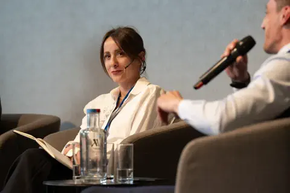

Në StarLabs dhe Shkollën Digjitale mirëpritëm ministrat Mimoza Kusari-Lila dhe Andin Hoti për një bisedë mbi zhvillimin e teknologjisë dhe mundësitë që ajo krijon për të rinjtë në Kosovë. Edukimi për një treg që ndryshon shpejt Diskutimi u përqendrua te ndikimi i teknologjisë dhe inteligjencës artificiale në punë, komunikim dhe zhvillimin e produkteve. Përgatitja për këtë realitet kërkon investim të vazhdueshëm në edukim, inovacion dhe përvojë praktike. Aftësi që ndërtohen duke krijuar Vizitorëve iu prezantua kurrikula e Shkollës Digjitale dhe mënyra se si projektet praktike e gamifikimi i ndihmojnë nxënësit të mësojnë në mënyrë aktive. Programim dhe teknologji Kreativitet digjital Zgjidhje problemesh
Në bashkëpunim me IREX dhe mbështetjen e USAID-it për zhvillimin e fuqisë punëtore, Shkolla Digjitale ofroi trajnime falas në Python, DevOps dhe Full Stack. Nga mësimi te projekti real Pas trajnimit në DevOps, Gent Brovina vazhdoi me një praktikë tremujore në StarLabs. Aty i zbatoi njohuritë në projekte reale dhe më pas iu bashkua ekipit si DevOps Engineer. Orinda Turku Alban Murtezaj Alisa Shala Edhe tre pjesëmarrësit e tjerë fituan praktikë tremujore falë rezultateve të tyre. Hapi nga trajnimi te puna bëhet i mundur kur njohuritë teknike shoqërohen me mentorim, përgjegjësi dhe përvojë konkrete. Mundësia hap derën; përkushtimi ndërton karrierën

StarLabs: Suksesi që Po e Pozicionon Kosovën në Industrinë Globale të Teknologjisë Në qendër të diskutimeve ishte rrugëtimi i jashtëzakonshëm i StarLabs. Një histori nga themeluesit e saj, Hana Qerimi dhe Darsej Rizaj, të cilët e ndërtuan kompaninë nga një startup me dy persona në Prishtinë, deri te kompania më e madhe e zhvillimit të softuerit në Kosovë. Sot, StarLabs operon ndërkombëtarisht, duke ofruar shërbime të plota të zhvillimit të softuerit në një gamë të gjerë industrish, të mbështetura nga Inxhinieria e Softuerit, Sigurimi i Cilësisë dhe Mbështetja e Klientit dhe Teknologjisë, me klientë që shtrihen nëpër Evropë e më gjerë. Sipas të dhënave të Data Forex, StarLabs kontribuon me rreth 7% të totalit të eksporteve të shërbimeve teknologjike të Kosovës. Një shifër që flet për ndikimin e jashtëzakonshëm të kompanisë në ekonominë kombëtare. Në një vend ku sektori i teknologjisë së informacionit dhe komunikimit është një ndër sektoret më premtues të rritjes, StarLabs ka provuar se zhvillimi i softuerit në nivelin botëror jo vetëm që është i mundshëm nga Kosova por ai tashmë po zbatohet. Presidentja në Detyrë Albulena Haxhiu u interesua drejtpërdrejt për udhëheqësinë e StarLabs, mbi mënyrën se si funksionon modeli ndërkombëtar i kompanisë, si kultivon talentin vendor dhe si qeveria dhe industria mund të bashkëpunojnë për ta pozicionuar Kosovën edhe më konkurrente në tregun global të teknologjisë.

Gjatë vizitës zyrtare në StarLabs dhe Shkollën Digjitale, Albulena Haxhiu u njoh me një ekosistem që lidh zhvillimin e softuerit me edukimin e fëmijëve dhe të rinjve. Nga talenti vendor në tregun ndërkombëtar Biseda trajtoi rrugëtimin e StarLabs, rritjen e ekipeve profesionale në Kosovë dhe mënyrat se si industria e institucionet mund të bashkëpunojnë për ta bërë vendin më konkurrues në teknologji. Të mësuarit përmes lojës Në Shkollën Digjitale, kodimi ndërthuret me gamifikimin. Sistemi i ekipeve i motivon nxënësit të përparojnë së bashku dhe e afron përvojën mësimore me mënyrën se si funksionojnë ekipet reale të teknologjisë. Bashkëpunim Mendim kritik Kreativitet Përgjegjësi dhe konkurrencë e shëndetshme

Në Kosovo Business Day 2026 në Hagë, Hana Qerimi, bashkëthemeluese dhe drejtuese e StarLabs dhe Shkollës Digjitale, iu bashkua dialogut për bashkëpunimin ekonomik ndërmjet Kosovës dhe Holandës. Një forum për partneritete të reja Forumi mblodhi politikëbërës, investitorë dhe drejtues biznesi për të diskutuar tregtinë, investimet dhe rolin e sektorit të teknologjisë në lidhjen e dy vendeve. Potencial njerëzor i fuqizuar nga teknologjia Paneli i teknologjisë vuri në qendër aftësinë e ekipeve për të mësuar shpejt, për t’u përshtatur dhe për ta përdorur inteligjencën artificiale si mjet për punë më të zgjuar. Edukimi është pjesa që e kthen këtë potencial në rezultate afatgjata. Talent digjital Siguri kibernetike Partneritete ndërkombëtare Edukim për industritë e së ardhmes